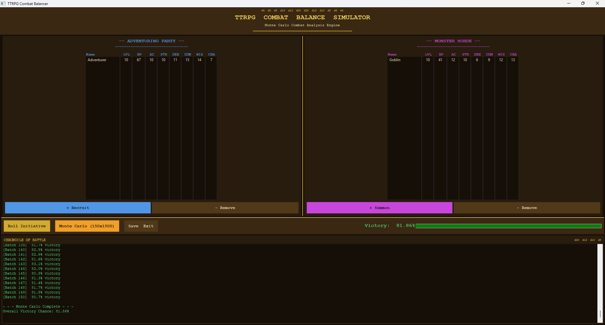
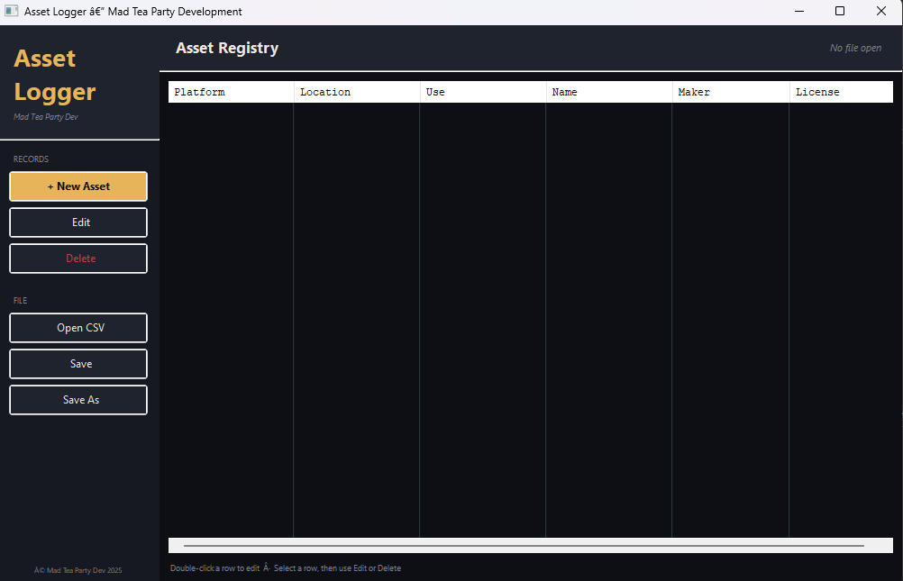
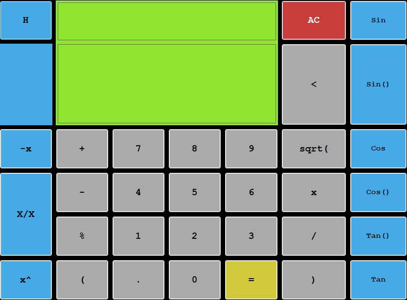
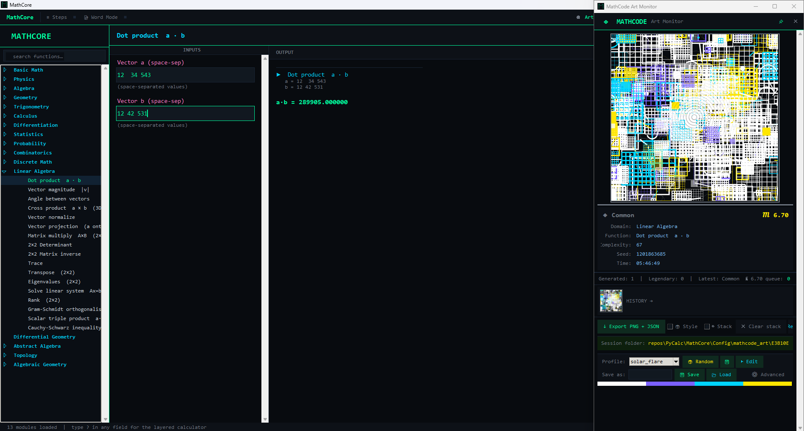
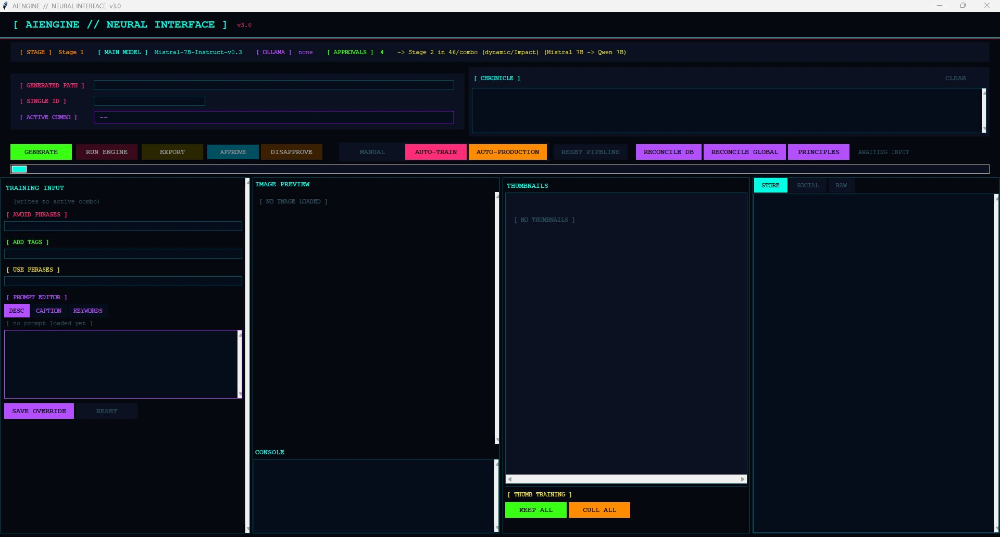

Discipline 02
Developer tools, simulation engines, and utility libraries written in C++ and Python. Built for clarity, extensibility, and real problems — not for school.

C++ · wxWidgets · MCI/winmm
A D&D-themed desktop simulator running 225,000 Monte Carlo trials to estimate party win probability against any enemy configuration. Full GUI, audio engine, sprite VFX, and save/load persistence.

C++ · wxWidgets
A desktop tool for indie developers preparing Steam submissions and managing asset inventory. Guides through structured asset entry and exports a clean, Steam-ready CSV.

C++ · wxWidgets
A desktop calculator built on a custom C++ expression engine with a full wxWidgets GUI. Explores event-driven UI design, input parsing, and operator precedence as a proper standalone application.

Python · Tkinter · Pillow
A modular math computation library covering 23 domains and 1,364 callable functions — and a generative art engine that turns every calculation into a unique 3000×3000px artwork.

Python · ML · Open Source
An intelligent social automation tool that creates, optimizes, and posts content across multiple platforms with minimal input. Entirely free and open source.
Python
A lightweight command routing system. Clean, simple, and built for extensibility.
GitHub →Python
Structured error-logging that captures exceptions with timestamps, file paths, and line numbers.
GitHub →Heavily simplified File I/O operations in C++.
RNG from simple dice rolls to a full Monte Carlo framework.
Physics as easy as a few method calls.
Inventory, dialogue, quests, and AI templates as a reusable framework.